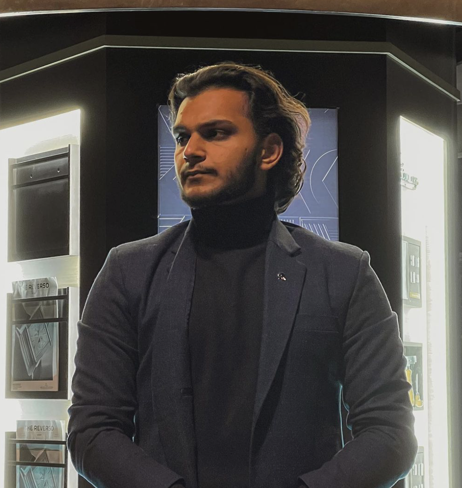

About Me
Hello! My name is Sahil kaushik. I am currently pursuing a Bachelor's Degree in Information Technology.In the IT industry, I have profound passion and desire to learn, to invent and to improve always to find more and to develop constantly in the world of information technology. Thus my years in this rapidly growing field have been characterized by the urge to learn more and to remain updated with current technology. These are the things that defines me, the ability to take on difficult tasks and solve them through coding, system design or even creating web applications. It has not been just a learning process for me, but a process through which I am learning to apply what I have learnt into producing meaningful solutions. I will not give anything less than my best in future endeavours and ensure that I create value to any organisation that I will join.
My achievements include:
- I have done a difficult project in my last trimester which is Developing Web Information Systems and in this project I proved my capability to develop perfect and easy to use applications.
- Obtaining practical experience while coding, solving problems as well as designing systems that have greatly improved on my technical abilities.
- It is evident that I had been very productive in all my academic activities and this had a very strong indication of my hard work and discipline towards producing the best.
My goals are to:
- Use my academic experience along with project experience with a view towards helping in the advancement of new goods and technologies in the technology field.
- Keep on advancing in innovation in general and especially in web development, and information systems.
- The main goals are to search for different and diverse challenges that would help me develop as an employee and a person in the IT filed.